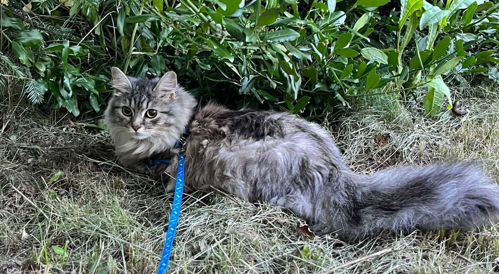

Luna
Luna jest kocurkiem o niesamowitej wręcz energii. Bardzo lubi zabawę, piłeczka, wędka zainteresuje się wszystkim co się rusza. Bardzo ciekawi go interakcja z człowiekiem, ale jak pomacha mu się przed pyszczkiem wędką to skupi całą uwagę na zabawie. Damon wskoczy wszędzie, więc warto zawczasu zadbać o przestrzeń na wielu wysokościach po których będzie się poruszał. Może czasem chcieć wejść po właścicielu na tulaski. Potrzebuje sporo uwagi i zabawy.
| Choroby: | brak |
|---|---|
| Płeć | samica [kastrowana] |
| W schronisku od | 2024-05-01 |
| Szczepienia/ odpchlenie/ chipowanie: | Tak |
